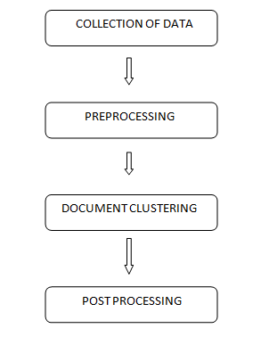
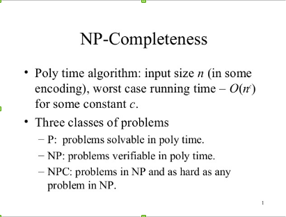

DOCUMENT CLUSTERING
Introduction
Clustering is a division of data into groups of similar objects. Each group, called cluster, consists of objects that are similar between themselves and dissimilar to objects of other groups.
In other words, the goal of a good document clustering scheme is to minimize intra-cluster distances between documents, while maximizing inter-cluster distances (using an appropriate distance measure between documents).
Clustering vs Classification
Clustering is the most common form of unsupervised learning and this is the major difference between clustering and classification.
Clustering is sometimes erroneously referred to as automatic classification. However, this is inaccurate, since the clusters found are not known prior to processing whereas in case of classification the classes are pre-defined.
Applications of Clustering
- Finding Similar Documents
This feature is often used when the user has spotted one “good” document in a search result. It is also able to discover documents that are conceptually alike in contrast to search-based approaches that only discovers whether the documents share same words.
- Organizing Large Document Collections
Document retrieval focuses on finding documents relevant to a particular query, but it fails to solve the problem of making sense of a large number of uncategorized documents.
Literature Study
We have divided offline clustering process into four stages outlined below:
- Collection of Data
- It includes the processes like crawling, indexing, filtering etc.
which are used to collect the documents that needs to be clustered, index
them to store and retrieve in a better way, and filter them to remove the extra
data.
- Preprocessing
- It is done to represent the data in a form that can be used for
clustering. There are many ways of representing the documents like, Vector-
Model, graphical model etc. Many measures are also used for weighing the
documents and their similarities.
- Document Clustering
- Document Clustering is the main focus of this project. We will discuss this in
detail in a while...
- Postprocessing
- Postprocessing includes the major applications in which the document
clustering is used, for example, the recommendation application which uses
the results of clustering for recommending news articles to the users.
Clustering Methods
K - Means
The objective function of K - means is to minimize the average squared distance of objects from their cluster centers, where a cluster center is defined as the mean or centroid μ of the objects in a cluster C:
Consider a set A = {1, 5, 8, 10}.Divide this set into two Clusters.
Let m1=1 , m2=10.
Two Clusters formed are {1, 5} and {8, 10} corresponding to m=1 and m=10.
Now divide these clusters further into two clusters:
Calculate mean for two clusters: m1=3 and m2=9
Clusters formed are {1, 5} and {8, 10} (not further divisible).
Hierarchical Clustering
Hierarchical clustering attempts to create a hierarchical decomposition of the given document collection thus achieving a hierarchical structure. Hierarchical methods are usually classified into Agglomerative and Divisive methods.
Preprocessing
Techniques Most of the clustering methods depend on various preprocessing techniques to achieve optimal quality and performance. We discuss here some of the common preprocessing methods.
Term Filtering
The removal of stopwords is the most common term filtering technique used. There are standard stopword lists available but in most of the applications these are modified depending on the quality of the dataset.
Stemming
Stemming is the process of reducing words to their stem or root form. For example ‘cook’, ’cooking’, ‘cooked’ are all forms of the same word used in different constraint but for measuring similarity these should be considered same.
Graph preprocessing
The algorithms using the graphs of documents or features require preprocessing of the graph inorder to improve the quality and time efficiency. Some simple graph preprocessing techniques include removal of edges having weight lower than threshold, removal of nodes.
Evaluation
One of the most important issues in clusters analysis is the evaluation of the clustering results. Evaluating clustering results is the analysis of the output to understand how well it reproduces the original structure of the data.
The ways of evaluation are divided in two parts:
1. External quality measure
User Surveys are a very common external measure of evaluating clustering algorithms and often the only one possible.
2. Internal quality measure
Overall Similarity an internal quality measure when no external information is available. Here the cohesiveness of clusters can be used as a measure of cluster similarity. One method for computing the cluster cohesiveness is to use the weighted similarity of the internal cluster similarity.
Triplet Based Graph Partitioning
Introduction
- Document Representation
- Similarity measure
- Graph preprocessing
- Graph partitioning
- Post processing
Document Representation
The most common way of representing the documents is as a set of keywords, where the keywords can be simple words or word phrases obtained using part-of-speech tagging, named entity recognition, etc.
Similarity measure
There are many standard similarity measures but in most of the applications
it is modified depending upon the input data and output required.
Some of the common similarity measures are:
a. Cosine vector similarity
b. Euclidian distance
Graph preprocessing
The graph initially created is a clique with an edge between every pair of nodes, where a node corresponds to a document and en edge-weight is the similarity between the two documents.
Graph preprocessing
There are two major problems with such a clique:
1. It is a very dense graph and thus the time efficiency of the partitioning
algorithm reduces to a high extent.
2. It contains a lot of noise added by the extra, non-required edges.
Graph partitioning
Graph partitioning is an NP-complete problem and thus has no perfect solution but there are many heuristic algorithms available which partition the graph into required number of clusters in polynomial time.
NP-complete Problem
Post processing
Many applications require some post-processing of the obtained clusters, for example, in case of the recommendation engine there is no need of clusters with single or very few number of documents and thus such clusters are merged applying other heuristics.
Algorithm
.PNG)
Results
Datasets
We have used two datasets
1. 20 newsgroups:-
This is a very standard and popular dataset used for evaluation of many text applications,
data mining methods, machine learning methods, etc.
• Number of unique documents = 18,828
• Number of categories = 20
• Number of unique words after removing the stopwords = 71,830
Datasets
2. Reuters -21578:-
This is the most common dataset used for evaluation of document categorization and clustering.
• Number of unique documents = 19715
• Number of categories = 5
• Number of unique words after removing the stopwords = 39,096
Conclusion
While working on this project we investigated many existing algorithms and proposed new ones. We conclude that it is hardly possible to get a general algorithm, which can work the best in clustering all types of datasets. It is still an open problem and looking at the rate at which the web is growing, for any application using web documents, clustering will become an essential part of the application.